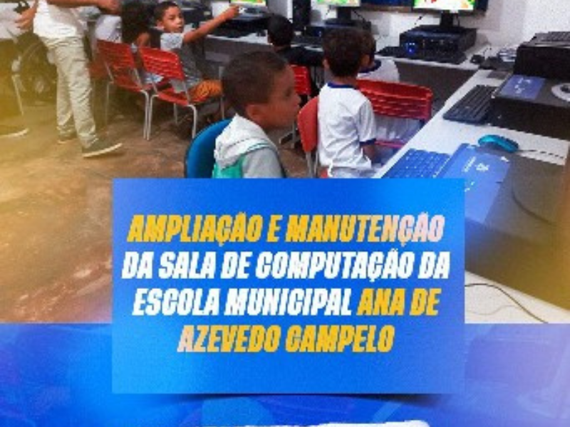
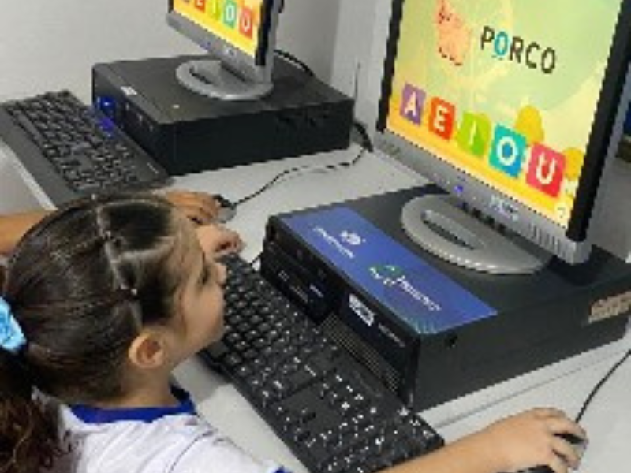
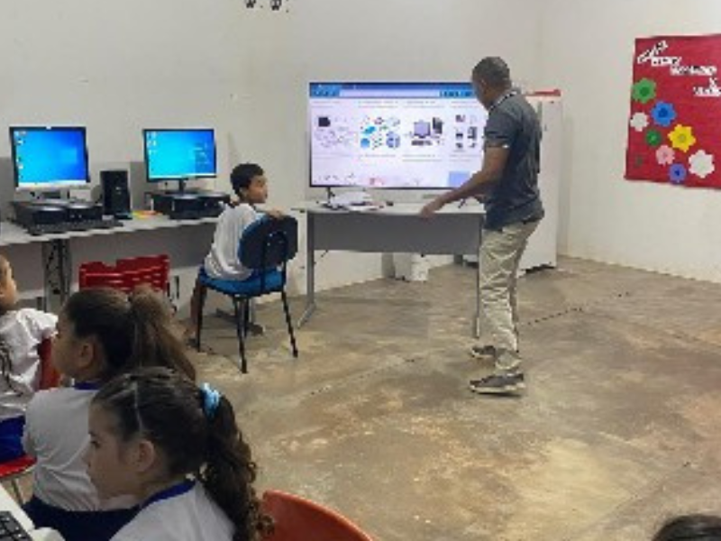
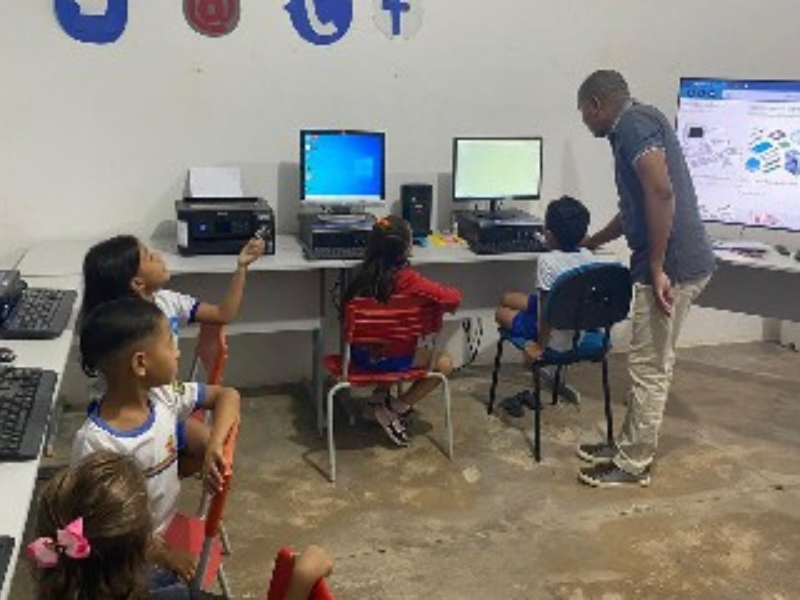
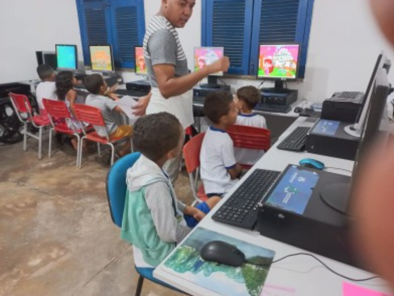
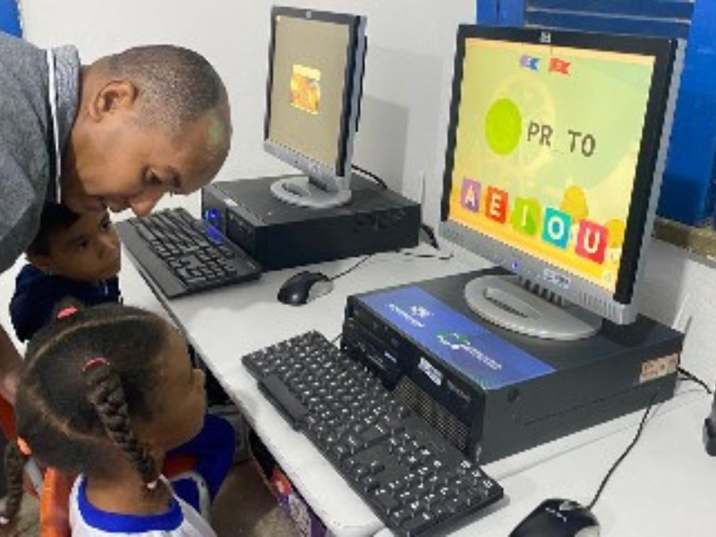
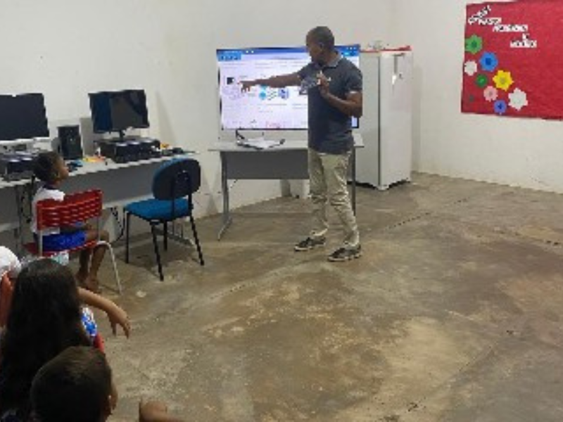
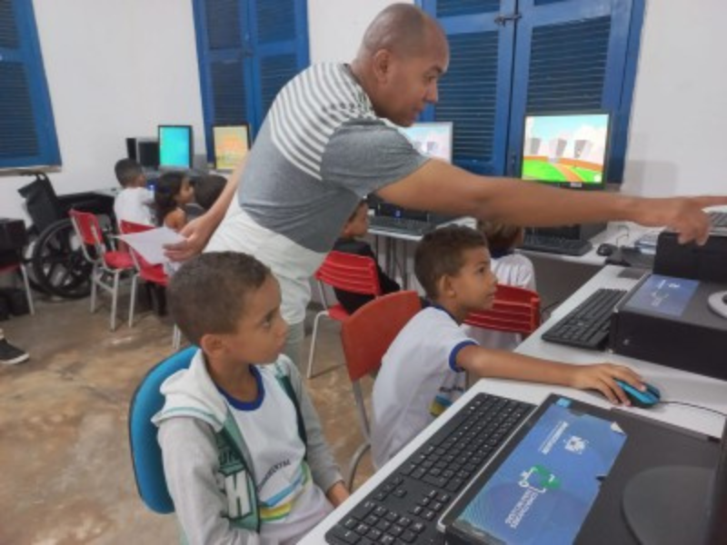
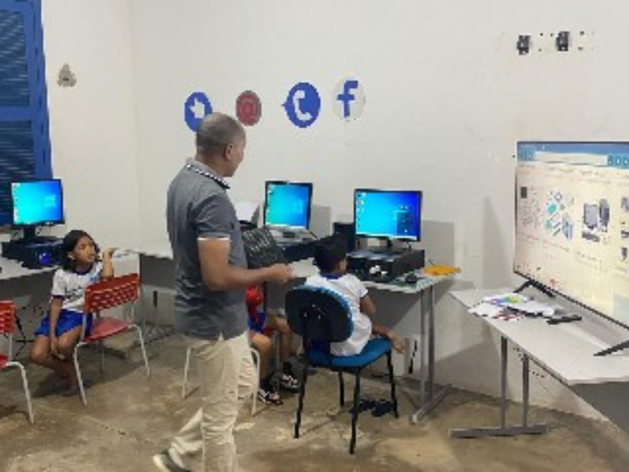

Seja-vindo!
A Informática tem desempenhado um papel essencial na formação dos alunos da Escola Municipal Ana de Azevedo Campelo, localizada no município de Avelino Lopes - PI.
Além de facilitar o acesso ao conhecimento e estimular a curiosidade, o uso da informática na educação ajuda no desenvolvimento das habilidades cognitivas e criativas dos alunos. As atividades são pensadas de forma lúdica e interativa, promovendo a inclusão digital desde os primeiros anos escolares.
Acreditamos que a tecnologia, quando bem aplicada, pode transformar a forma como as crianças aprendem, preparando-as para os desafios do futuro com mais confiança e competência. Na nossa escola, a informática é uma aliada valiosa no processo de ensino e aprendizagem.








